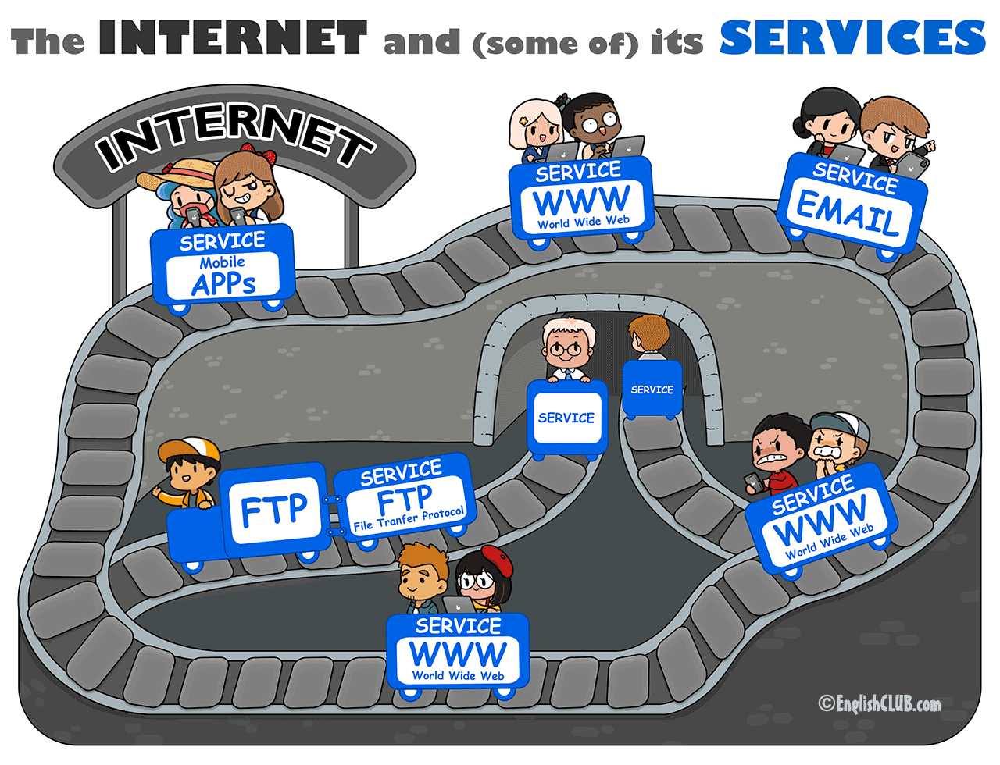
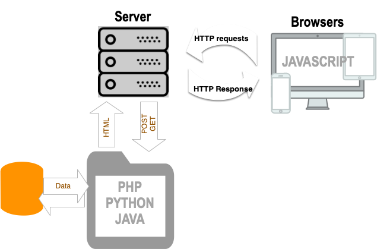

11-Web Development
Silvestro Di Pietro
Silvestro Di Pietro


Silvestro Di Pietro
6/10/2023

https://github.com/pinolallo/BFG_2023_Slides/blob/main/08-network/08-network_a.md#tcpip-layers

Common Services
http and https (the web pages)email (the email system)ftp (the File Transfer Protocol)The WorldWideWeb (W3) is a wide-area hypermedia information retrieval initiative aiming to give universal access to a large universe of documents.
here the link of the first web site
https://info.cern.ch/hypertext/WWW/TheProject.html
The web server in
it’s simple form is just a file server that will transmits over the
tpc/ip network a file requested by a browser using an
url
URL is for Uniform Resource Locator is a part of the URI
Uniform Resource Identifier
URIs may be used to identify anything, including real-world objects, such as people and places, concepts, or information resources such as web pages and books.
schematics of an uri

Using an uri you can request a file such as:
htmlimages
xmljsonHTML is the standard markup language for Web pages tha will be rendered by a rendering engine
<!DOCTYPE html>
<html>
<head>
<title>Page Title</title>
</head>
<body>
<h1>This is a Heading</h1>
<p>This is a paragraph.</p>
</body>
</html>Rendering is a process that turns website code into pages users can see/use. The process is made by a rendering engine inside a web browser

Please check this page for many examples *https://www.w3schools.com/html/html_examples.asp
Extensible Markup Language (XML) is a markup language
and file format for storing, transmitting, and reconstructing arbitrary
data. https://en.wikipedia.org/wiki/XML Xml use the same
markup structure of HTML using tags: You can define you
element ad fill with info
A browser will transform the HTML into a tree structure
inside an xml
Web is not just static pages, can be dynamically coded

the requests to a server from browser:
POSTGETHEADPOST is used to send data to a server to create/update a resource. Some notes on POST requests:
/test/demo_form.php?name1=value1&name2=value2
HEAD is almost identical to GET, but without the response body. In other words, if GET /users returns a list of users, then HEAD /users will make the same request but will not return the list of users. HEAD requests are useful for checking what a GET request will return before actually making a GET request - like before downloading a large file or response body.

Front end (User Interface) is managed by HTML
CSS JAVASCRIPT
THE head of html wiLL include also the CSS files and the
Javascript files
https://www.w3schools.com/css/
https://www.w3schools.com/js/default.asp